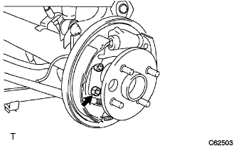

リヤアクスルASSY（4WD） 取り付け |
| 1. リヤアクスルシヤフトベアリング取り付け |
白ガソリンを使用して、ベアリングリテーナOUTを清掃する。
ベアリングリテーナOUTにベアリングリテーナガスケットを取り付ける。
 |
ベアリングリテーナガスケットのツメをかしめる。
ベアリングリテーナOUTをアクスルシャフトに取り付ける。
新品のベアリングのアウターレース外面に、MPグリースNo.2を塗布する。
SSTおよびプレスを使用して、新品のベアリングを圧入する。
| 2. リヤスキッドコントロール ロータ取り付け |
SSTおよびプレスを使用して、新品のスキッドコントロールロータを圧入する。
| 3. リヤアクスルシヤフトインナリテーナ取り付け |
新品のインナリテーナを約150°Cに加熱する。
SSTおよびプレスを使用して、図の方向でインナリテーナを取り付ける。
| 4. リヤアクスル ハウジング エンド ガスケット取り付け |
白ガソリンを使用して、バッキングプレートおよびアクスルハウジングを清掃する。
 |
バッキングプレートを浮かせてエンドガスケットを取り付ける。
ボルト4本をセットする。
| 5. リヤアクスル シャフト オイルシール取り付け |
新品のオイルシールのリップ部にMPグリースNo.2を塗布する。
SSTおよびハンマーを使用して、オイルシールを打ち込む。
| 6. リヤアクスル シャフト取り付け |
 |
ベアリングリテーナOUTの突起部を下側に向け、SSTを使用して、アクスルシャフトをアクスルハウジングに挿入する。
|  |
ナット4個で、ベアリングリテーナOUTをバッキングプレートに取り付ける。
| 7. ブレーキシユーリターンスプリング取り付け |
| 8. パーキングブレーキシューストラットセットLH取り付け |
 |
SSTを使用して、ストラットセットを取り付ける。
| 9. リヤアクスル振れおよび軸方向のガタ点検 |
リヤタイヤ取りはずし
リヤブレーキドラム取りはずし
リヤアクスルハブベアリング軸方向のガタ点検
 |
ダイヤルゲージをリヤアクスルハブの図の位置にセットし、リヤアクスルハブベアリングの軸方向のガタを点検する。
リヤアクスルハブ振れ点検
 |
ダイヤルゲージをリヤアクスルハブの図の位置にセットし、リヤアクスルハブの振れを点検する。
リヤブレーキドラム取り付け
リヤタイヤ取り付け
| 10. リヤブレーキ ドラム取り付け |
リヤブレーキドラムを取り付ける。
| 11. ブレーキドラムとライニングのすき間調整 |
 |
バッキングプレートのサービスホールからマイナスドライバーでアジャスターを回して拡張させ、ブレーキシューASSYをリヤブレーキドラムに接触させる。
 |
マイナスドライバーでリヤブレーキオートマチックアジャストレバーLHを押しながらもう1本のマイナスドライバーでアジャスターを回して収縮させる。
ブレーキシューASSYがリヤブレーキドラムに接触しなくなった状態から更にアジャスターを1/2回転させて収縮させる。
| 12. スピードセンサ RR LH取り付け |
ボルトでスピードセンサRR LHを取り付ける。
| 13. リヤタイヤ取り付け |
| 14. テストモード点検(スピードセンサ系統) |
参照)